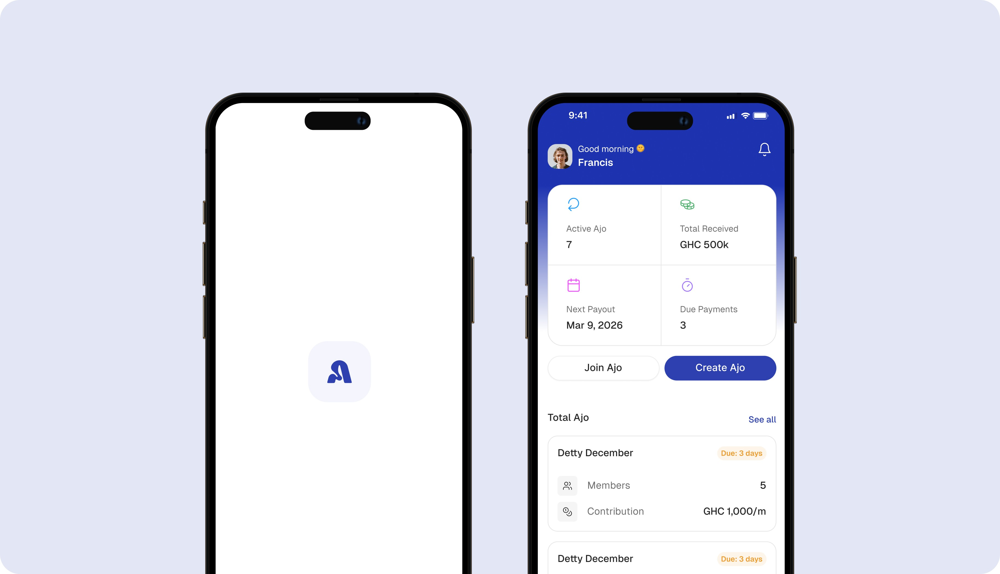
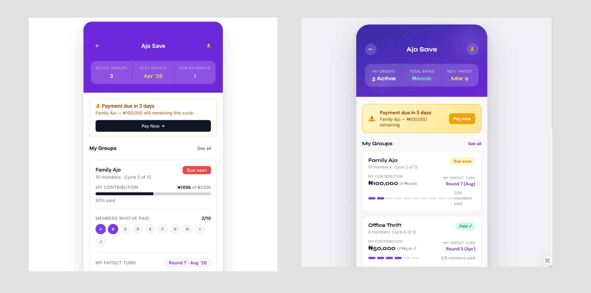
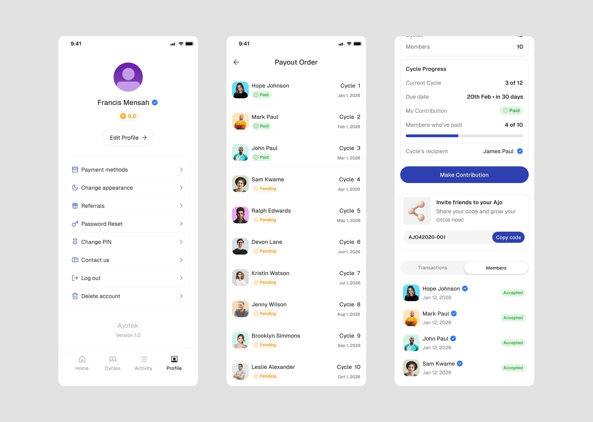
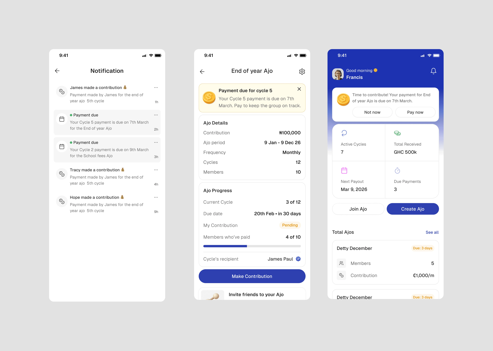
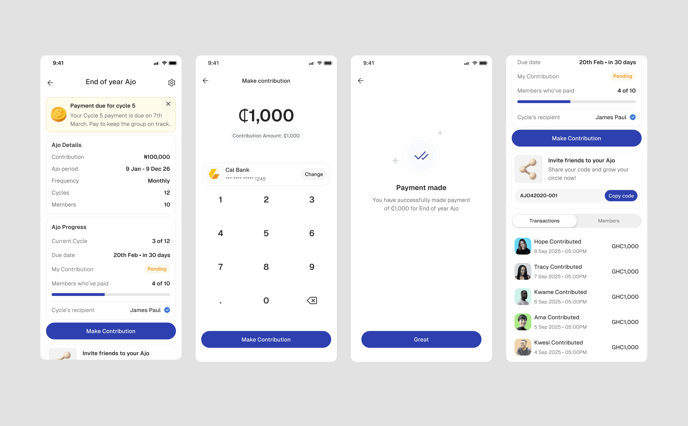
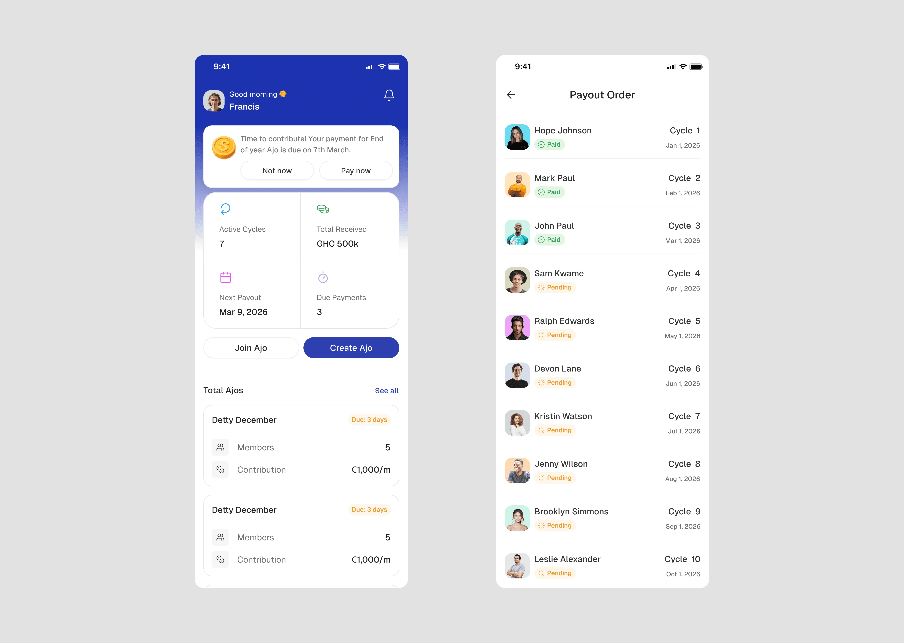
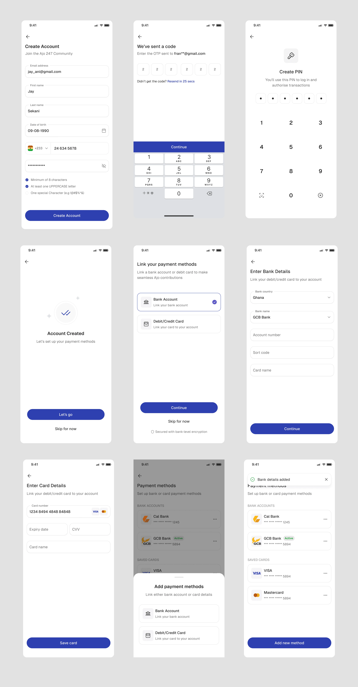
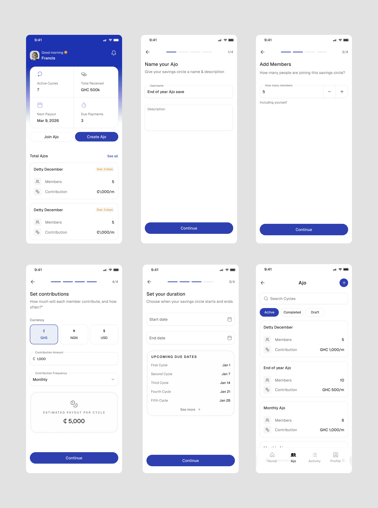
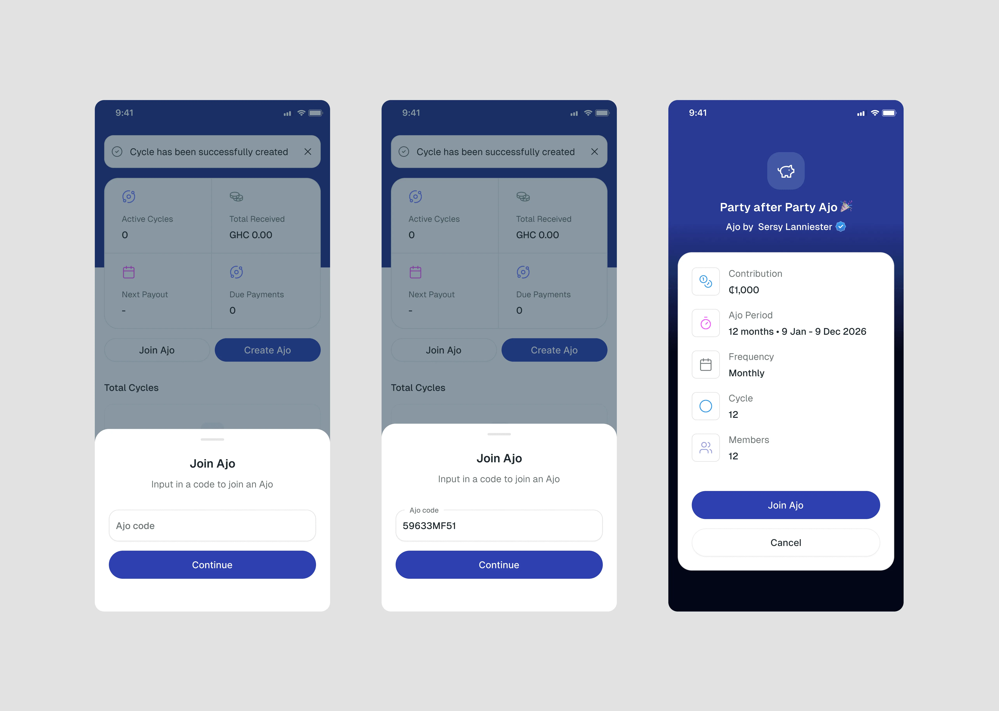

Ajotek explores how digital rotational savings platforms can move beyond basic transaction functionality and instead embed visible trust mechanisms that drive retention, accountability, and long-term financial engagement. This is a 0 → 1 concept built around a single conviction: trust is not a feature you add at the end — it is the product itself.
Case Study
Ajotek

Overview
The Problem
Digital Ajo fails where physical Ajo suceeds
Traditional Ajo works because trust is social, visible, and enforced by community accountability. When someone misses a contribution, the group knows. When the payout arrives, everyone witnesses it. That visibility is what keeps the system honest.
Digital versions strip all of that away. The interface might process a payment correctly, but it cannot replicate the feeling of being seen and held accountable. The result is a trust vacuum — and users fill that vacuum with anxiety, drop-off, and churn.
The initial assumption was that users were leaving because the app was confusing. The real problem was different: digital platforms fail to replicate the visible trust mechanisms that make physical Ajo groups work. Users were not confused by the interface. They were unconvinced by the product.
This reframe shifted the design challenge from interface optimisation to trust infrastructure.
Research & Insights
What behavioural finance and community finance tell us
Ajo is not a new concept. Rotating savings groups have existed across West Africa for generations, built entirely on trust, social pressure, and shared accountability. But moving that system into a digital product introduces a fundamental tension: the informal cues that make physical Ajo work — seeing your neighbour contribute, knowing the organiser personally, feeling the social weight of dropping out — do not translate automatically into an app interface. To understand how to bridge that gap, we looked at both behavioural finance research and how existing community savings groups actually operate in practice. The patterns that emerged were consistent and shaped every major product decision.
Loss aversion outweighs gain motivation:
Users are more afraid of losing their contribution than they are excited about receiving their payout. The product needs to minimise perceived risk at every step, not just celebrate the win at the end.
Public accountability increases compliance
In physical Ajo groups, the social cost of missing a contribution is what keeps members consistent. Without a digital equivalent, that accountability disappears entirely.
Visible contribution logs reduce anxiety
Users do not just want to know their own status — they want to see that the group is healthy and moving forward. Transparency is a retention mechanism, not a nice-to-have.
Reputation influences financial behaviour
Admin credibility, member track records, and group history are the cues users rely on to decide whether a group is safe to join. Hiding this information removes the signals people depend on.
Process
Early ideation with AI
Before moving into Figma, I used AI to generate a set of initial ideation screens — exploring layout directions, information hierarchy, and visual framing for the core trust-related surfaces. This was not about producing production-ready UI. It was a rapid way to pressure-test structural ideas and identify which trust signals felt legible at a glance and which needed more deliberate design intervention. The outputs served as directional references that I then reworked entirely in high fidelity, informed by the behavioural principles guiding the product.

Layer 1 - Trust Infrastructure
The foundation of the product is verified identity, public contribution ledgers, transparent payout rotation logic, and immutable transaction history. These are not support features. They are the core product. A verified profile badge, an admin credibility score, and a publicly visible contribution log transform trust from an assumption into something the user can actually see and evaluate.

Layer 2 - Social Accountability Engine
Physical Ajo groups apply gentle social pressure naturally. The digital equivalent needs to replicate this without becoming punitive. Contribution streak indicators reward consistency. Scheduled group reminders reduce missed payments without confrontation. Missed payment states are surfaced with empathy rather than shame — the goal is to support re-engagement, not to embarrass. A group health score gives admins and members a shared understanding of how the cycle is performing.

Layer 3 - Contribution Optimisation
Once trust is established, the contribution act itself needs to be frictionless. Easy debit system and intelligent reminders reduce the activation energy required to stay consistent. Confirmation receipts close the loop — users need to feel that their money arrived, that it was recorded, and that the group saw it.

Layer 4 - Transparency Dashboard
The dashboard surfaces cycle progress, payout queue position, contribution history, and group financial health in one place. The payout rotation logic is not buried in a help article — it is visible and interactive. This removes the most common source of user anxiety in rotational savings: not knowing when your turn is coming, or whether the system can be

Account Creation Flow
Onboarding was designed to establish trust before a user ever joins their first group. The flow moves through four deliberate steps: account creation, email verification, and PIN setup.
Account creation collects the essentials including name, date of birth, phone number, and password, with inline validation that guides users toward a strong password without blocking their progress. OTP verification confirms identity immediately after sign-up, with a visible resend timer to reduce anxiety around code delivery. PIN creation closes the flow by framing the PIN not just as a security measure but as the key to logging in and authorising transactions, setting the right expectation from the start about how the app handles financial actions.
Each step is intentionally minimal. No unnecessary fields, no front-loaded education, no friction that delays a user from getting to the product. Trust is built through the clarity of the process itself.

Ajo creation flow
Creating an Ajo group was designed as a guided four-step setup that gives the organiser full clarity over the group's structure before any member is invited.
The first step names the group and adds a description, giving the savings circle an identity from the start. The second step sets the member count, with a simple incrementer to specify how many people are joining including the organiser. The third step defines the duration by setting a start and end date, with upcoming cycle due dates calculated and displayed immediately beneath so the organiser can see exactly when each payout will fall before committing.
The fourth step sets the contribution terms: currency, contribution amount, and frequency. As values are entered, an estimated payout per cycle is calculated in real time, giving the organiser a clear picture of what each member stands to receive when their turn arrives.
The ajo settings screen which can be viewed from the ajo page, shows you all the details like group name, member count, duration, contribution amount, currency, and payout order

Join Ajo
Joining a group was designed to give prospective members enough information to make an informed decision before committing. Rather than accepting a blind invite, users enter a unique group code which pulls up a full preview of the Ajo they are about to join.
The preview surfaces everything that matters upfront: the group name, total members, start and end date, contribution amount, currency, frequency, and the estimated payout per cycle. This transparency is intentional. In a physical Ajo, you would know exactly what you are signing up for before putting your name in. The digital version needed to replicate that same moment of informed consent.
Once the member has reviewed the terms and is satisfied, they confirm and join the group. No surprises after the fact, no commitment made without full visibility of the group's structure.

Deliberate omissions
Impact
Projected outcome if taken to market
Outcomes grounded in behavioural research and comparable fintech benchmarks, representing what the product could achieve if built and validated with real users.
20-30%
increase in cycle completion rate
15-25%
reduction in early contribution drop-off
Fewer
missed payments through frictionless auto-debit design
Organic
growth driven by referral loop on first cycle completion
Validation roadmap
If this concept were taken into a live testing phase, validation would be structured around a 3-cycle evaluation window with three core experiments: measuring the impact of the public contribution timeline on cycle completion, testing auto-debit adoption against missed payment reduction, and evaluating whether the group health score visualisation improves group longevity and retention. Each experiment is tied directly to retention economics — not vanity engagement metrics
Reflection
AI Integration
Balancing AI efficiency with design quality, managing inconsistent outputs, and development handoff issues.
What I Did:
- Used AI tools such as Claude, Figma Make, and v0 for early-stage ideation and divergent thinking
- Applied human judgment for all final design decisions
- Built final deliverables in Figma for pixel-perfect handoff
- Validate AI concepts with user research
What this project reinforced about fintech design
The most important insight from Ajotek financial UX is fundamentally about managing perceived risk. Users are not just evaluating whether an app is easy to use. They are evaluating whether it is safe to trust with their money and their community relationships.
In community-based savings specifically, trust is not a feature you can add at the end of the design process. It has to be the foundation the rest of the product is built on. Every screen either builds that trust or erodes it.
This project also reinforced that strategic reframing is often the most valuable design contribution. The shift from "the interface is confusing" to "the platform fails to replicate visible trust mechanisms" changed everything — the product architecture, the success metrics, the feature prioritisation, and the design principles. Getting the problem statement right is not a research formality. It is where the real design work begins.
If I were to extend this further, the immediate priority would be prototype testing with real Ajo group administrators — the people who carry the most accountability in the system and whose trust in the platform is most consequential to cycle completion.